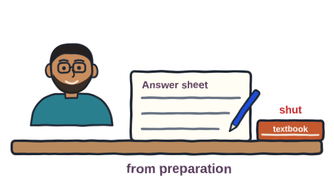
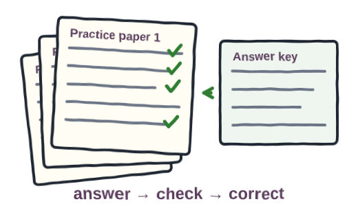
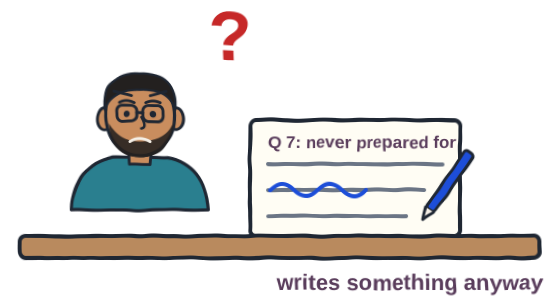
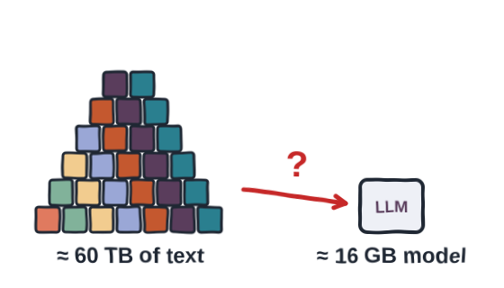
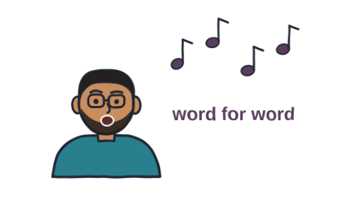
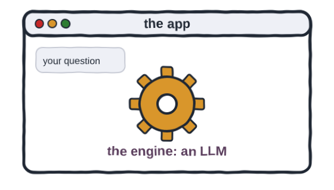
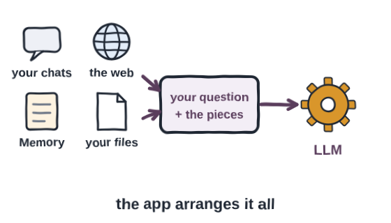
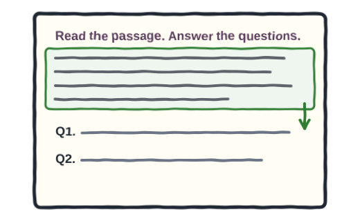

Prefer to watch? This post goes with the video (7:39). Open it on YouTube, where you can also leave a comment.
A quick question
You type a question into ChatGPT, Gemini or Claude, and the answer comes back in about 2 seconds. Where did that answer come from? Did the tool look it up in a database?
Is it a search?
Most students say yes, because it feels like a search. You ask, and the information comes back.
But think about how a database search really works. If the data is there, the matching rows come out. If it is not there, you get "not found". A database never makes up a row.
A database search
data is there → the matching rows
data is missing → "not found"
An AI chat tool
it knows → an answer
it doesn't know → still an answer
These tools rarely say they don't know. They answer confidently, even when they are wrong. So the answer is not really coming from a database, and something else is going on. Let's try to understand what exactly is happening.
Think of an exam
Say you appeared for an exam. You read a question on the paper and write the answer. Your textbook is shut, so you are writing from your preparation.

How did you know the answer? You studied the topics, and you solved practice papers again and again. That practice is what lets you answer by yourself.

Now say a question comes up that you never prepared for. You won't leave it blank. You will write something, and it may be right or it may be wrong.

The engine learns the same way
The engine inside these tools learns like a student with practice papers. It reads a huge amount of text, again and again. Each time, it sees some words and guesses the word that comes next.
Show the answer
Papa. You knew it because you have heard the rhyme so many times. That is a next-word guess, learned from practice.
The engine plays this guessing game billions of times. After each guess it adjusts a little, and slowly it learns the patterns of the language.
The goal: see how guessing from what you have seen works, and where it breaks. You don't need to know Python for this.
The steps: press Run once. Then find the line marked # edit here, change "yes" to "ha", and press Run again. Last, change it to "pizza".
Guess first: the word "pizza" is not in the rhyme. Before you run it, what do you think the guesser will say?
What it means: our toy keeps a small table of which word came after which, so it can honestly say "no idea". A real engine keeps no such table, only numbers. So it always writes something, like you with the exam question you never prepared for.
What happens when you ask
When you ask a question
text → numbers → a huge model → numbers → text
When you ask a question, your text is first turned into numbers. Those numbers go into the model, which is itself a huge collection of numbers. Some maths runs on them, and out comes another set of numbers.
That result is turned back into text, one word at a time. Each word is the model's best guess for what comes next.
Where would a database even fit?
So what does the model keep from all that reading? It keeps no text, only numbers: billions of them, tuned to the patterns in the text. Could those numbers hold a full copy of everything it read? Let's check with real numbers.
Meta trained its open model, Llama 3, on over 15 trillion tokens. A token is a piece of a word, and one token is about 4 characters of English. The rest is our own arithmetic:
| What | Size | How we got it |
|---|---|---|
| The text Llama 3 was trained on | about 60 TB | 15 trillion tokens × 4 characters each |
| The smaller trained Llama 3 model | about 16 GB | 8 billion numbers × 2 bytes each |

60 TB of text cannot fit into 16 GB, a space about 3,750 times smaller. So the training text is not copied into the model. What the model keeps is the patterns in that text.
There is one exception. Think of a song in a language you don't know. You can still sing it word for word, without knowing what it means. The engine is similar with text it saw very often: that text can come back exactly.

So there is no database inside the engine, but it is not a blank slate either. OpenAI says the same in plain words: its models do not store copies of the data they were trained on.
The engine has a name: LLM
This predictive engine inside the tools has a name. It is called a large language model, or an LLM.
An LLM holds everything it learned as numbers, which are called its parameters. So that kind of memory is called parametric memory.
The app around the engine
So is ChatGPT an LLM? Not exactly. ChatGPT is the app you talk to, and the LLM is the engine inside it.

| The app | The engine inside |
|---|---|
| ChatGPT | GPT models |
| Gemini | Gemini models |
| Claude | Opus, Sonnet, Haiku |
| Grok | Grok models |
Here is the important part: the engine does not remember your chat. Every time you ask, the app sends the whole conversation so far, along with your new question. The engine reads all of it, and answers.
So who does the remembering? The app does. It saves your chats and keeps a Memory of what you shared.
The app can also search the web and read a file you upload. Then it packs the right pieces in with your question and hands them to the engine.

Engineers call this arranging around the engine orchestration. The engine itself still has no database.
The price of guessing
Is guessing from patterns a bad thing? No. Because the engine works with patterns instead of stored pages, it can explain an idea in fresh words, not just fetch a saved one. But that ability comes with two costs.
First, it can be confidently wrong, like you with the exam question you never prepared for. OpenAI's own researchers say these models are rewarded for guessing, instead of saying "I don't know".
Second, its learning stops on a date. To test this, I used Gemini 3.8 Flash in Google AI Studio, with Google Search switched off. I asked: has the movie Avatar: Fire and Ash been released?
It said no, and that the film was due on 19 December 2025. In fact, the film came out on that date, and it passed $1 billion by 4 January 2026. The engine simply never read about it.
So how can we help it? Think back to the exam. Most papers have a comprehension section: a short passage, then questions on it. You answer from the passage, not from memory.

I gave Gemini the same kind of paper: a short passage about the movie, an empty line, and then my question. Copy it and try it yourself, in any AI app.
This time it said yes, because the passage makes the date clear. Now read the note under that answer. From its parametric memory, the model still says the film has not been released. The passage gives the right answer, while its old memory argues back.
Putting the information into the question like this is called context stuffing. It is exactly what these apps do with your chats, your files and the web.
The takeaway
- ChatGPT, Gemini and Claude are apps. The engine inside each one is an LLM.
- The engine has no database. It keeps patterns as numbers, and predicts the next word.
- The app keeps your chats, your Memory and your files, searches the web, and hands the right pieces to the engine.
That leaves you with a question. If the engine has no database, how would you give it your own data, such as your college notes or your shop's price list?
Ask it twice
- Open any one of these apps: ChatGPT, Gemini or Claude.
- Ask it about something that happened in the last few months.
- Watch the answer. Did it search the web (you will see sources, or a "searching" note), or did it answer from memory?
- Then paste a short news paragraph about the same thing, leave an empty line, and ask the same question again.
Tell me under the video what changed. And think about it: how would you give it your own data?
References
Every number on this page, and where it comes from. Checked on 28 Oct 2026.
- OpenAI — How ChatGPT and our foundation models are developed (updated 30 April 2025). Models are large sets of numbers, "weights" or "parameters". They "do not store or retain copies of the data they are trained on"; they predict the next word. link
- Meta — Introducing Meta Llama 3 (18 April 2024). "Llama 3 is pretrained on over 15T tokens", released with 8B and 70B parameters. link
- OpenAI Help Center — Understanding and counting tokens. 1 token is about 4 characters. So 15 trillion tokens is roughly 60 TB of text, and an 8B model at 2 bytes a number is about 16 GB: our own arithmetic. link
- Carlini et al. — Extracting Training Data from Large Language Models (USENIX Security 2021). Hundreds of exact passages could be pulled out of GPT-2: text seen often, or very unusual, can come back word for word. link
- Lewis et al. — Retrieval-Augmented Generation for Knowledge-Intensive NLP Tasks (2020). Where the term comes from: "parametric memory" (what the model's numbers hold) and "non-parametric memory" (a searchable index). link
- OpenAI Help Center — Memory in ChatGPT; Searching the web with ChatGPT; Deleting and archiving chats (checked 26 October 2026). The app keeps your chats, a Memory of details you shared and your files, and can search the web. link
- OpenAI — Why language models hallucinate (5 September 2025). Hallucinations are "plausible but false statements"; models are rewarded for guessing over saying "I don't know". link
- Boxoffice Pro — Avatar: Fire and Ash crosses the billion-dollar mark at the global box office. As of 4 January 2026 the film had earned $1.083 billion worldwide, the third Avatar film past $1 billion. It opened on 19 December 2025. link
- My own runs — 27–28 October 2026: the Gemini API and Google AI Studio (Gemini 3.8 Flash, Grounding with Google Search off). Asked cold, the models said the film was not out yet. With the passage first, they said yes. The two recordings on this page are real.